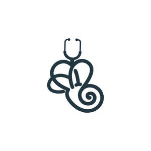

Trade Mark Journal No.2025/019 9 May 2025
UK00004191952 21 April 2025 (35,44)

- Class 35
- Billing services in the field of healthcare; Business administration services in the field of healthcare; Medical billing services for hospitals; Administrative management of health care clinics; Medical billing services for doctors; Management of health care clinics for others; Data processing services in the field of healthcare; Administration of prepaid health care plans; Health care cost management; Administrative services relating to dental health insurance; Negotiation of contracts with health care payors; Medical billing; Retail services for pharmaceutical, veterinary and sanitary preparations and medical supplies; Health care cost review; Compilation of statistics relating to health care utilization; Advice relating to the business management of health clubs.
- Class 44
- Healthcare; Medical and healthcare services; Healthcare services; Medical and healthcare clinics; Health-care; Human healthcare services; Providing medical information in the healthcare sector; Health-care services; Healthcare consultancy services; Healthcare advisory services; Healthcare information services; Health care consultancy services [medical]; Health clinic services [medical]; Medical care; Medical care services; Health resort services [medical]; Health care; Health farm services [medical]; Medical nursing services; Nursing services (Medical -); Medical health assessment services; Collation of information in the healthcare sector; Home health care services; Health clinic services; Rental of medical and health care equipment; Provision of health care services; Health care in the nature of health maintenance organizations; Medical nursing; Nursing, medical; Medical services; Consulting services relating to health care; Medical tele-reporting [medical services]; Nursing care services; Medical services in the field of diabetes; Medical services in the field of oncology; Provision of health care services in domestic homes; Managed health care services; Rental of equipment for human healthcare; Medical treatment services provided by a health spa; Medical clinic services; Clinic (Medical -) services; Clinic services (Medical -); Consultancy services relating to health care; Medical services in the field of nephrology; Health care relating to hydrotherapy; Consultancy relating to health care; Mobile dental care services; Professional consultancy relating to health care; Health spa services; Health care relating to homeopathy; Mental health services; Services for the provision of medical care information; Mobile medical clinic services; Ambulant medical care; Advisory services relating to health care; Medical treatment services; Medical care and analysis services relating to patient treatment; Health center services; Health consultancy; Medical spa services; Medical imaging services; Nursing care; Health care relating to naturopathy; Pharmaceutical services; Health care services offered through a network of health care providers on a contract basis; Health care relating to acupuncture; Medical care of feet; Physician services; Health screening services in the field of asthma; Health care relating to osteopathy; Health screening services; Clinics (Medical -); Medical clinics; Technical consultancy services relating to medical health; Provision of medical services; Nursing care (Provision of -); Provision of nursing care; Pediatric nursing services; Health care services for treating Alzheimer's disease; Outpatient and inpatient care services; Health centre services; Telemedicine services; Medical diagnostic services; Health centers; Mental health screening services; Health care relating to therapeutic massage; Medical consultancy services; Health counseling; Medical treatment services provided by clinics and hospitals; Residential medical treatment services; Public health counseling; Information services relating to health care; Medical screening services in the field of asthma; Medical counseling services; Health care relating to fasting; Occupational health consultancy; Tele-reporting (medical services); Medical clinic day care services for sick children; Health counselling; Health screening; Health centres; Health assessment services; Health care relating to chiropraxis; Personality testing [mental health services]; Health care relating to relaxation therapy; Health hydro services; Providing mental health rehabilitation facilities; Health risk assessment; Health care relating to remedial exercise; Personality assessment services [mental health services]; Provision of health information; Advice relating to the personal welfare of elderly people [health]; Advisory services relating to health; Health care services for assisting individuals to stop smoking; Health assessment surveys; Providing health information; Health screening services in the field of sleep apnea; Medical and health services relating to DNA, genetics and genetic testing; Health risk assessment surveys; Health advice and information services; Professional consultancy relating to health; Information relating to health; Preparation of reports relating to health care matters; Medical screening services relating to cardiovascular disease; Providing health care information by telephone; Psychological care; Providing health care information via a global computer network ; Exercise facilities for health rehabilitation purposes (Provision of -).
London Balance and Wellness Ltd